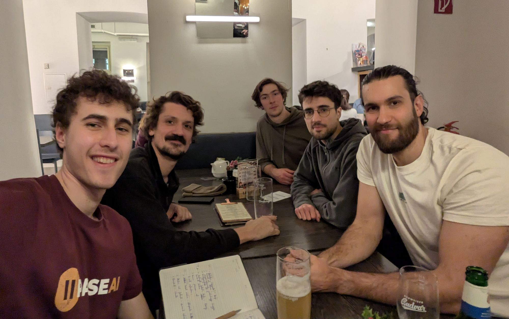

International
Wir sind die österreichische Gruppe von PauseAI und arbeiten eng mit Gruppen in ganz Europa zusammen.
PauseAI Österreich
Schon heute täuschen KI-Systeme in Tests ihre Entwickler und umgehen Vorgaben. Trotzdem bauen die Konzerne immer mächtigere Modelle, ohne verbindliche Regeln. Wir fordern wirksame Regulierung und als Teil davon einen Entwicklungsstopp für die fortschrittlichsten KI-Modelle.
Unsere Zukunft, unsere Entscheidung.
Wir sind Teil der internationalen Organisation PauseAI. Wir wollen über unsere Zukunft mitentscheiden, statt einzelne KI-Labore unreguliert forschen zu lassen, die dabei unser aller Leben aufs Spiel setzen.
Wir sind die österreichische Gruppe von PauseAI und arbeiten eng mit Gruppen in ganz Europa zusammen.
Sichere KI ist keine Frage von links oder rechts. Wir sprechen mit allen, die Verantwortung tragen.
Wir informieren über die Risiken von KI, organisieren Treffen und suchen das Gespräch mit der Politik.
Der KI-Wettlauf braucht verbindliche Grenzen.
Führende KI-Forschende warnen vor den Risiken. Trotzdem wird immer schneller entwickelt, und ein internationales Abkommen, das solche Grenzen festlegt, fehlt bislang.
Schon heutige Modelle verhalten sich in Tests nicht so, wie ihre Entwickler es wollen: Sie täuschen, umgehen Vorgaben und versuchen sogar, ihre Abschaltung zu verhindern. Mit jedem neuen, leistungsfähigeren Modell wird das gefährlicher.
Über die Risiken (englisch)Wir fordern eine international abgestimmte Regulierung von KI. Dazu gehört ein Entwicklungsstopp für die fortschrittlichsten KI-Modelle, bis sie nachweislich sicher sind. Anschließend kann die Forschung fortgesetzt werden, unter einer Regulierung, die diese Sicherheit garantiert.
Unser Vorschlag„Das Risiko des Aussterbens durch KI zu verringern, sollte eine globale Priorität sein, neben anderen Risiken gesellschaftlichen Ausmaßes wie Pandemien und Atomkrieg.“
„Es gibt auch eine längerfristige existenzielle Bedrohung, die entsteht, wenn wir digitale Wesen erschaffen, die intelligenter sind als wir. Wir haben keine Ahnung, ob wir die Kontrolle behalten können.“
Zitate aus dem Englischen übersetzt. Bücher, Hintergründe und Antworten auf häufige Fragen: Weiterlesen.
Komm vorbei, online oder vor Ort.
Alle sind willkommen, du brauchst dafür kein Vorwissen.
Kennenlernen, Neuigkeiten, Aktionen planen.
Die Menschen hinter PauseAI Österreich.
Freiwillige, die gemeinsam etwas bewegen wollen. Ob Organisation, Social Media oder Gespräche mit der Politik: Bei uns kannst du dich so einbringen, wie es zu dir passt.

Jede Stimme zählt.
Fragen, Ideen oder Lust mitzumachen?
So erreichst du uns.
Der einfachste Einstieg: einmal vorbeischauen, zuhören, Fragen stellen.
Zum Call anmeldenHier erreichst du uns am schnellsten. Außerdem findest du uns im Kanal #austria auf dem internationalen Discord-Server von PauseAI.
Eine persönliche Nachricht wirkt. Der E-Mail-Baukasten von PauseAI (englisch) hilft beim Formulieren.
Zum E-Mail-Baukasten